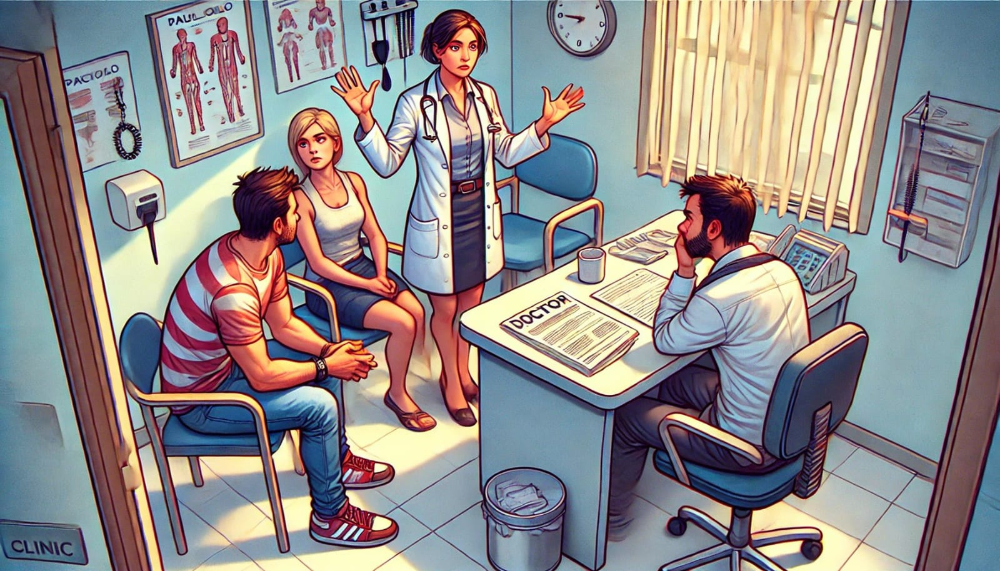
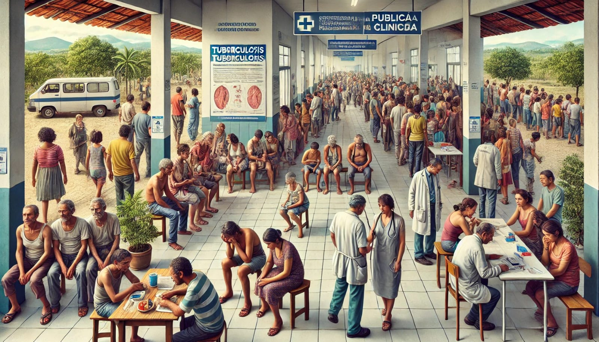
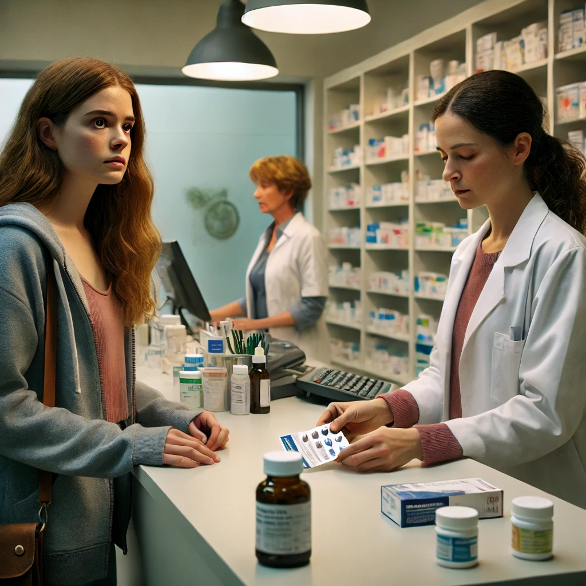
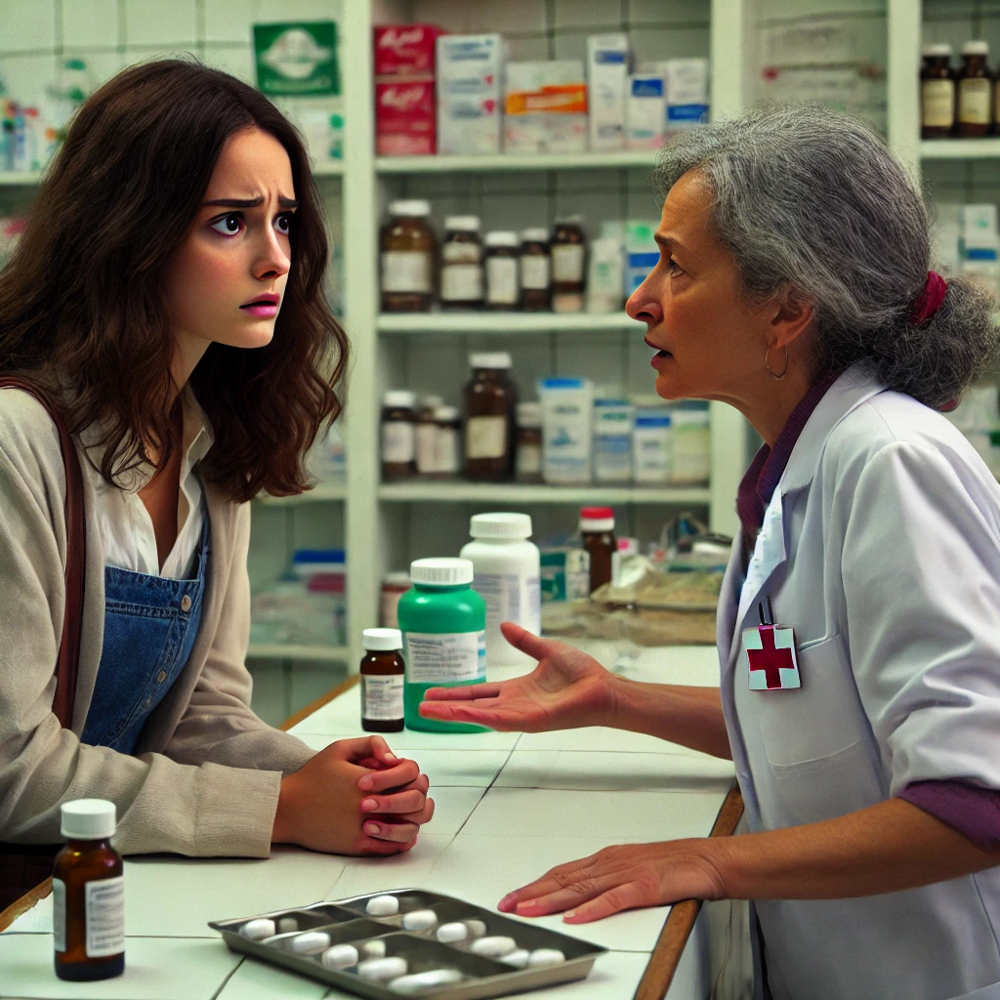

RACISMO AMBIENTAL E DOENÇAS NEGLIGENCIADAS DA POPULAÇÃO NEGRA
A tuberculose é uma doença que não escolhe cor, mas que acomete desproporcionalmente a população Negra.
Cenário 1: Casa de Débora - O Início dos Sintomas
Zelia: (voz suave e grave) "Essa é a história de Debora, uma trabalhadora dedicada que, há algumas semanas, começou a sentir sintomas estranhos: uma tosse insistente, febre baixa e um cansaço inexplicável..."
Debora: (tosse) "Essa tosse não vai embora... talvez seja só um resfriado."
Aline: (entra na cena, observando Debora com preocupação) "Mãe, isso não parece normal. Você está pálida e a tosse continua... Acho que é melhor procurar um médico."
Debora: (hesita) "Ir ao médico agora? Nem sei se vou conseguir ser atendida..."
Zelia: "Vocês conhecem alguém que evita ir ao médico por medo de enfrentar filas ou de não conseguir atendimento? Este é o caso de muitos pacientes no Brasil."

Cenário 2: Clínica Pública - O Desafio do Diagnóstico
Zelia: "Convencido por sua filha Aline, Debora decide procurar uma clínica pública para descobrir o que está acontecendo. Mas ele encontra o que muitos pacientes enfrentam: uma longa fila e poucas vagas para atendimento."
Debora: (esperando pacientemente, mas claramente desconfortável) "Já estou aqui há horas..."

Dra. Jamile: (finalmente chama Debora) "Próximo!"
Debora: (entra no consultório e se senta) "Doutora, eu estou com uma tosse que não passa, febre... me sinto fraco."
Dra.Jamile: "Pode ser só uma virose, Debora. Descanse, tome bastante líquido e, se os sintomas continuarem, volte."
Efeito Sonoro: Sons de murmúrios, filas e um relógio para dar uma sensação de espera longa.

Cenário 3: Casa de Debora - O Agravamento dos Sintomas
Narrador: "Dias depois, os sintomas de Debora pioram. Ela agora sente suores noturnos e continua a perder peso."
Debora: (ofegante e tossindo) "Acho que preciso voltar ao médico... mas eu sei que a fila vai ser longa novamente."
Aline: "Mãe, você não pode desistir agora. Eu ouvi falar que pode ser tuberculose. Por favor, volte à clínica!"
Zelia: "A tuberculose é uma doença que pode ser curada, mas, sem o tratamento adequado, ela se torna um risco para o paciente e para todos ao seu redor."

Cenário 4: Clínica Pública - Exames e Diagnóstico
Zelia: "Debora chega a unidade de saúde e enfrenta novamente uma espera, Felizmente consegue ser atendida."
zelia: "Débora chega à clínica em busca de atendimento, e já tem 125 pessoas esperando atendimento."
Efeito Sonoro: Som de vozes ao fundo, cadeiras rangendo e chamadas de senhas pelo sistema de som.
Debora: (sentando-se, olhando o relógio) "Espero que não demore muito... já perdi a manhã toda."
Zelia: (voz ao microfone) "Senha 125, por favor, encaminhar-se ao consultório 3."
Debora: (levantando-se apressada) "Finalmente minha vez. Vamos ver o que a doutora vai dizer..."

Dra. Lene: (recebendo Débora no consultório) "Débora, vi que você já esteve aqui antes, como você está hoje? (Debora relata) como os sintomas não melhoraram, vamos precisar fazer alguns exames para investigar melhor."

Zelia: "Débora sente um misto de preocupação e alívio, sabendo que os exames são essenciais para entender o que está acontecendo."
Cenário 5: Diagnóstico Confirmado e Início do Tratamento
Zelia: "O tratamento da tuberculose dura pelo menos seis meses, com antibióticos específicos. No entanto, muitos pacientes desistem antes do tempo, aumentando o risco de uma forma resistente da doença."
Zelia: "2 horas depois, sai o resultado dos exames e a médica chama Debora novamente."
enquanto aguarda o resultado do exame, Debora tosse muito, afastando as pessoas, e ficando
Dra. Lene: "Debora, os exames mostraram que você tem tuberculose. A boa notícia é que existe tratamento, mas você precisa seguir à risca."
Debora: "Doutora, e se eu não aguentar o tratamento? São muitos meses..."

Cenário 6: Busca pelo Medicamento e Discriminação
Zelia: "Após ser diagnosticada, Débora foi até a farmácia da clínica buscar os medicamentos necessários para o início do tratamento. Mas, infelizmente, enfrentou preconceito."
Debora: (aproximando-se do balcão) "Bom dia, vim buscar os medicamentos para tratar a tuberculose."
Erica: (recuando ligeiramente, com um tom frio) "Fique ali no canto, por favor. Não se aproxime muito... só um momento que eu vou pegar sua medicação."
Debora: (visivelmente desconfortável) "Mas... é correto tratar as pessoas assim? Estou aqui para me curar, não para causar problemas."
Erica: (entregando o medicamento, sem olhar nos olhos de Débora) "Aqui estão. Certifique-se de tomar direitinho e de não faltar nas consultas. É importante... por todos nós."
Zelia: "Além do impacto físico da doença, muitos pacientes enfrentam o estigma associado à tuberculose. Tratar com humanidade e respeito é fundamental para que todos possam enfrentar o tratamento com dignidade."
Efeito Sonoro: Som de uma porta se fechando e de vozes sussurrando ao fundo, transmitindo o ambiente hostil da clínica.

Cenário 7: Dificuldades Durante o Tratamento - Risco de Abandono
Debora: "Esses remédios me deixam mal... será que vale a pena continuar?"
Aline: "Mãe, você não pode parar agora! É difícil, eu sei, mas você vai melhorar. Não desista, por você e por todos."
Zelia: "O abandono do tratamento aumenta as chances de uma forma resistente da doença e coloca a sociedade em risco. Por isso, o apoio emocional é fundamental para pacientes em tratamento."
Cenário 8: Dificuldades no Acesso ao Medicamento
Zelia: "Três meses após o início do tratamento, Débora enfrentou outro desafio comum: a falta de medicamentos na unidade de saúde."
Debora: (chegando à farmácia da clínica, visivelmente nervosa) "Bom dia, vim buscar minha medicação para continuar o tratamento da tuberculose. Já não está fácil, e agora essa falta de medicamentos!"
Erica: (com expressão de preocupação) "Infelizmente, estamos sem estoque no momento. Você pode verificar novamente na próxima semana."
Debora: (exasperada) "Na próxima semana? Vocês sabem o quanto isso é perigoso? Se eu interromper o tratamento, minha saúde pode piorar e a doença pode voltar mais resistente!"
Erica: (tentando acalmar) "Eu entendo, senhora, mas infelizmente isso acontece às vezes. Você pode entrar em contato com a Secretaria de Saúde ou o Programa de Controle da Tuberculose. Eles podem indicar outra unidade próxima que tenha o medicamento disponível."
Debora: (ainda indignada) "Isso não deveria acontecer! Como esperam que as pessoas se recuperem se não têm os recursos básicos? Eu vou buscar ajuda agora mesmo, mas não vou deixar isso passar despercebido!"
Zelia: "Débora procurou informações na Secretaria de Saúde e, apesar de sua frustração, conseguiu ser orientada a buscar o medicamento em outra unidade. Graças à sua determinação, ela evitou a interrupção no tratamento."
Efeito Sonoro: Som de passos rápidos saindo da unidade de saúde e uma chamada telefônica com orientações sobre a nova unidade.

Cenário 9: Reflexão e Conscientização - Debora Completa o Tratamento
Debora: "Consegui, mas me preocupo com quantas pessoas ainda enfrentam tudo isso sem o apoio que eu tive."
Aline: "Você é um exemplo, Mãe. Precisamos falar mais sobre essa doença e garantir que todos tenham o mesmo acesso ao tratamento que você teve."
Cenário 10: Mensagem Final e Chamado à Ação
Zelia: "A tuberculose tem cura, mas o descaso social e institucional a torna mais letal. Tratar a tuberculose é um compromisso de todos."
Todos os Personagens (em coro): "Cuide de você, cuide do próximo!"
Efeito Sonoro: Aplausos e música de encerramento.
História Interativa sobre Tuberculose
Tuberculose além dos pulmoes: A Ameaça oculta que Todos Precisam Conhecer.
Explore esta história e aprenda mais sobre a tuberculose.